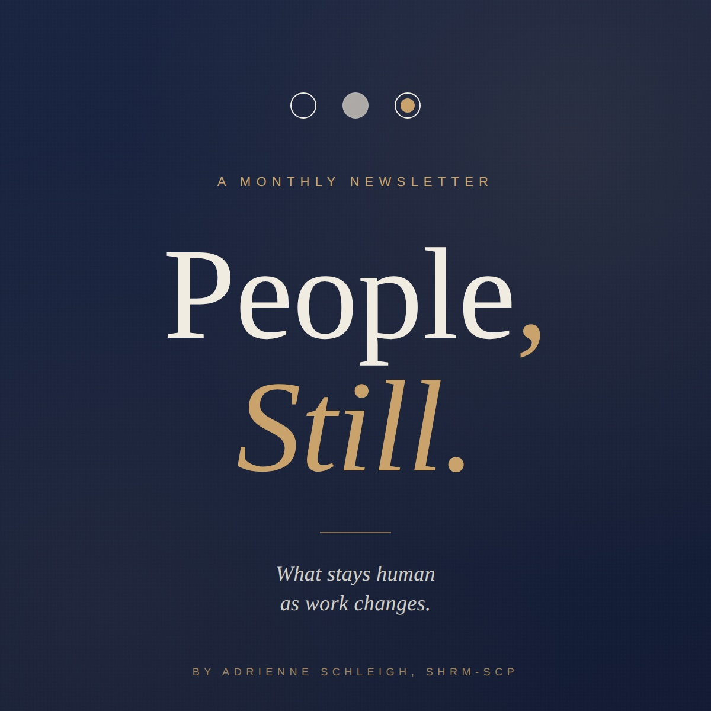

Engagements
Speaking, training, and facilitation.
For more than a decade, invited into rooms where HR leaders gather to think out loud about the future of the field.
Conferences, keynotes, training sessions, board offsites, and the kind of conversations that don’t fit on a slide. Adrienne brings the same thing to every format: real material, honest perspective, and a respect for the room she’s been invited into.
Three Ways to Engage
One voice, three formats.
Speaking
Keynotes and conference talks.
For conferences, association meetings, and leadership events where the audience needs a perspective on where HR is going and what it should be doing about it. Adrienne speaks plainly, with conviction, and with the kind of energy and humor that keeps an audience leaning in. Engaging, fun, and grounded in real work.
Training
Skills-based sessions for teams.
For HR teams, leadership groups, and managers who need to actually learn something they can use the next day. Format is built to fit the team, anywhere from a focused two-hour session to a multi-day program.
Facilitation
Workshops, offsites, and difficult conversations.
For groups that need to work through something together. Strategy offsites, leadership retreats, board planning sessions, or the kind of conversation that benefits from someone in the room who isn’t inside the politics.
Where Adrienne Has Been
A few of the rooms and conversations.
New York State SHRM Conference
Featured speaker (three times) on strategic HR, organizational culture, and the future of the HR function.
Central New York SHRM Annual Conference
Keynote speaker.
DisruptHR Rochester
“Putting the HUMAN back in HR: Balancing Compliance and Compassion.”
Five minutes, twenty slides, fifteen seconds each. The HR talk that does not let you hide.
Watch the SegmentWXXI Connections
“Does Generation Z get a bad rap?”
A conversation about generational dynamics in the workplace, the assumptions we make about Gen Z, and what HR leaders should actually be paying attention to.
Watch the SegmentWXXI Connections
“Discussing quiet quitting.”
On what quiet quitting actually is, what it isn’t, and what employers and employees are each missing in the conversation.
Watch the SegmentOrganizing a conference, training, or leadership offsite?
Invite AdrienneThe Newsletter

Monthly thinking on workforce strategy, culture, and what stays human.
Published on LinkedIn the first of every month, starting June 2026.
Subscribe on LinkedIn